Anime Scenes
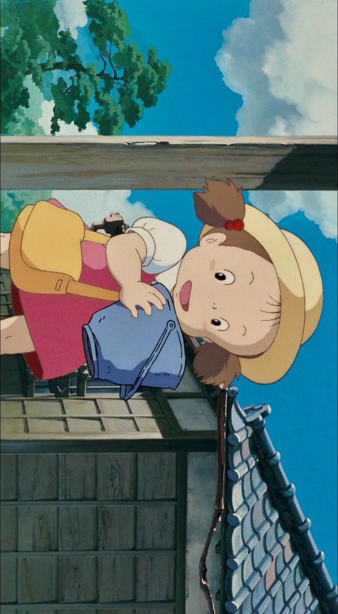
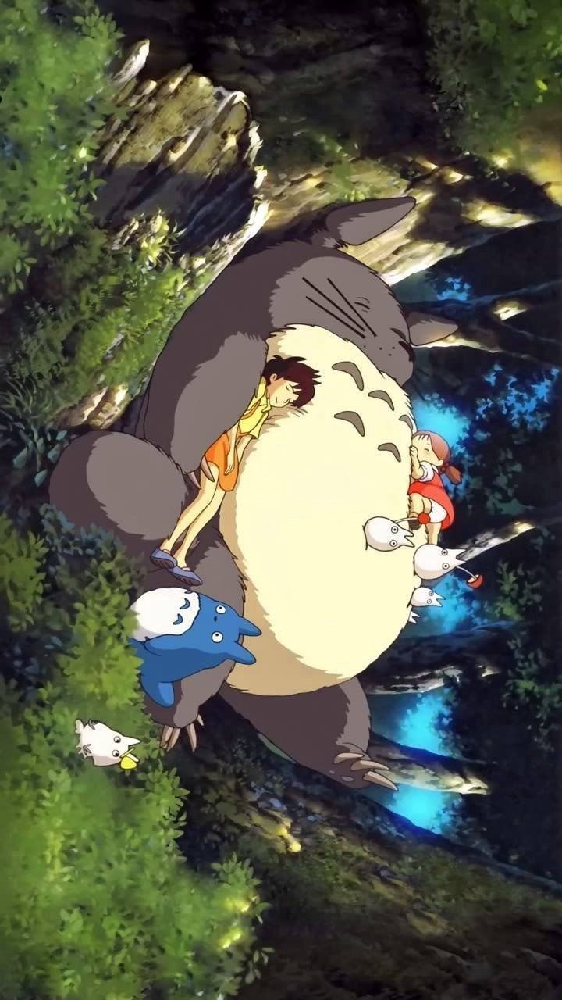
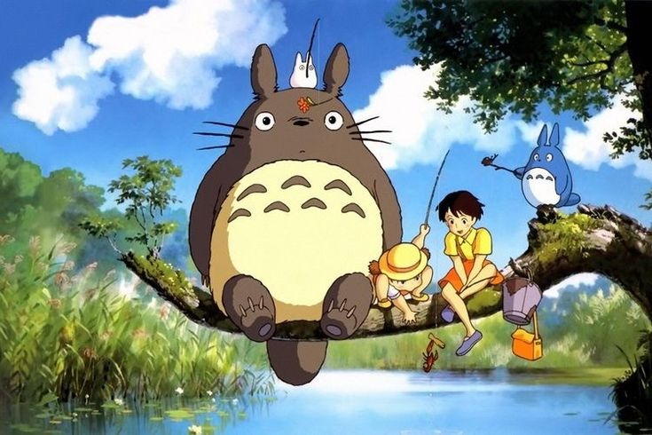
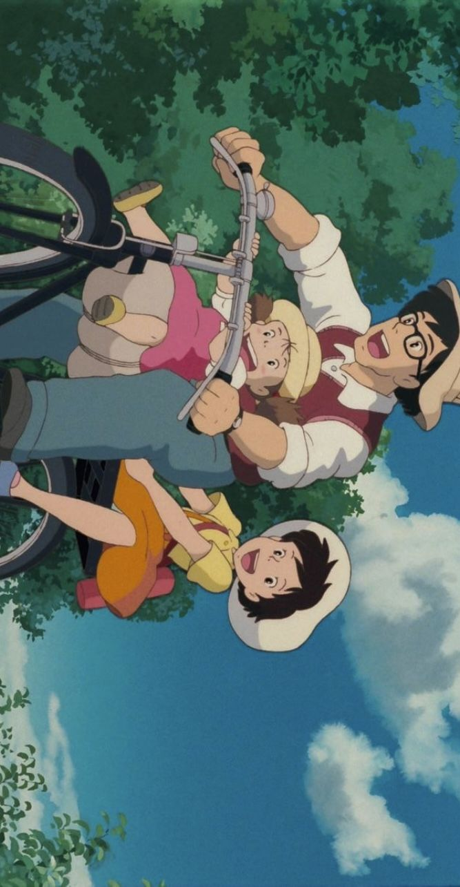
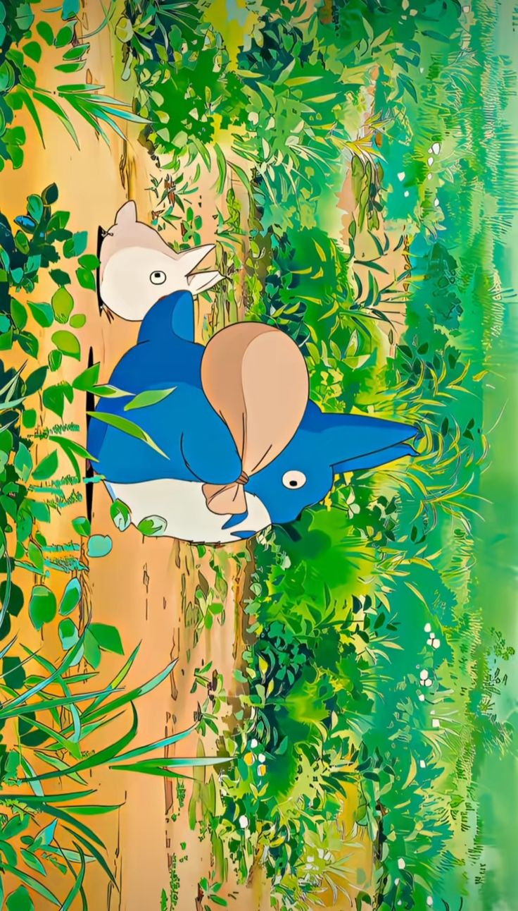
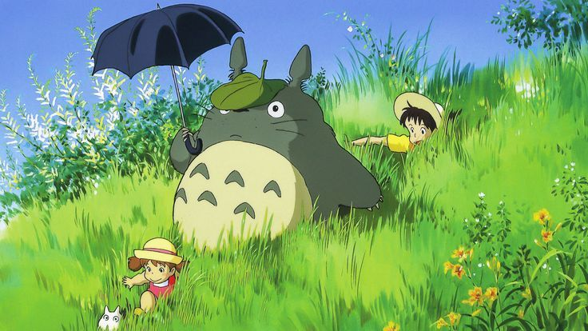
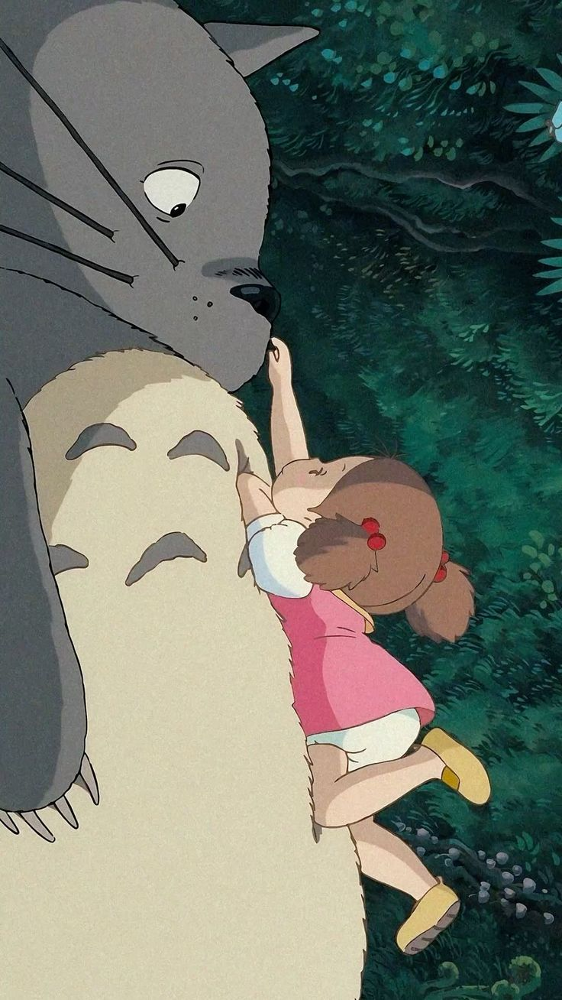
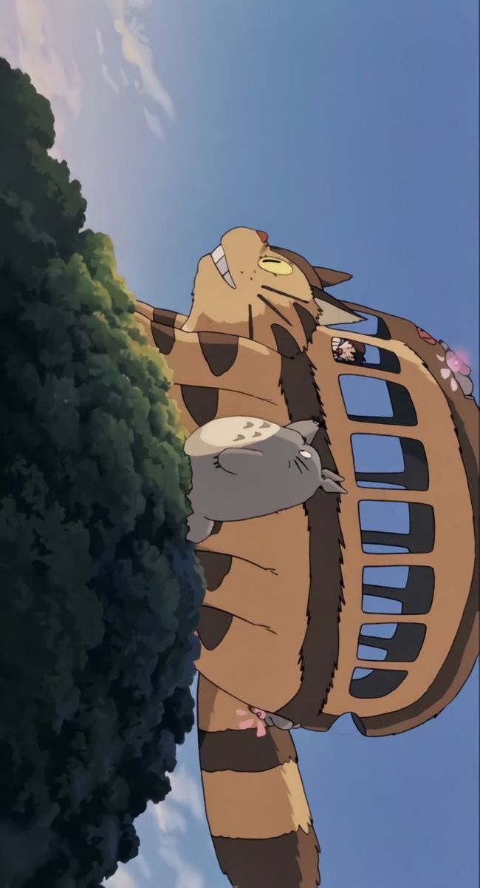
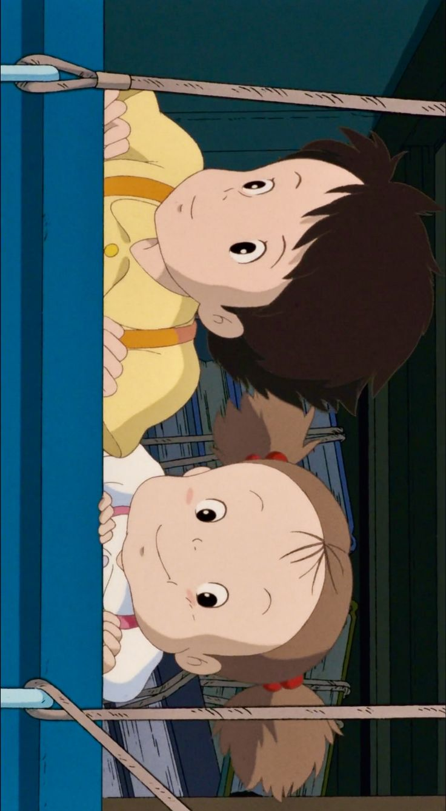
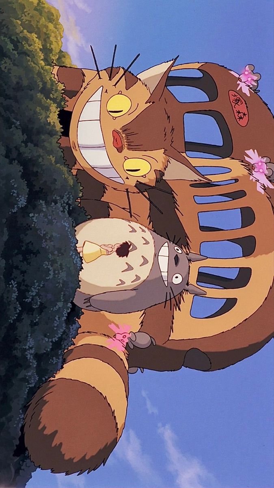
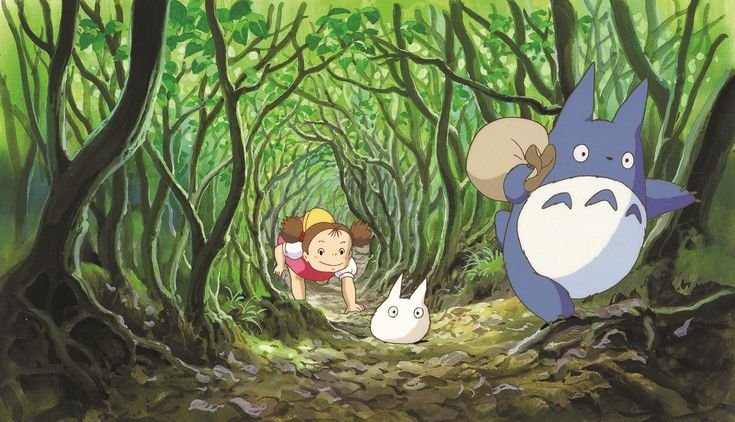
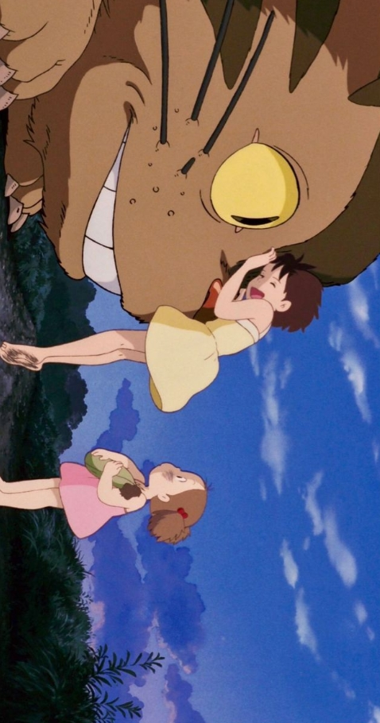
“Trees and people used to be good friends.”
Anime Studio: Studio Ghibli
Director: Hayao Miyazaki
Producer: Toru Hara
Distributor: Toho
Rating: ★ 8.2 / 10
Source: Original Story
Release Date: April 16, 1988
Duration: 1h 26min
Music by: Joe Hisaishi
Status: Movie
Country: Japan
Language: Japanese
Box Office: ~$41 million
Awards: Animage Grand Prix Award